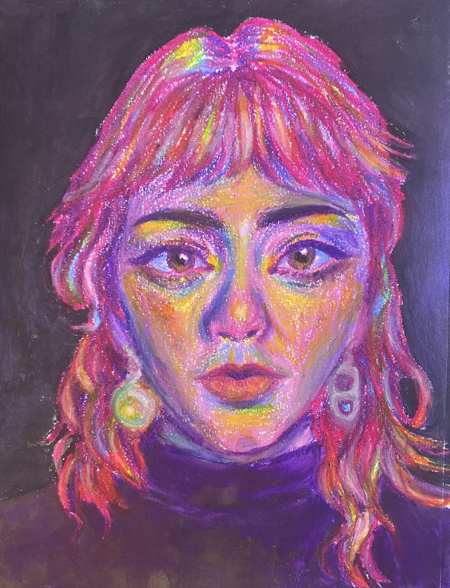

Paulina's Homepage

About Me
Hello! My name is Paulina Patino, and I am an art student at UCSC graduating in 2025! I am a mixed-media artist with a focus on creating portraits. I like to add lots of color and vibrancy to my pieces, and aim to inspire creativity and encourage positivity through my work.